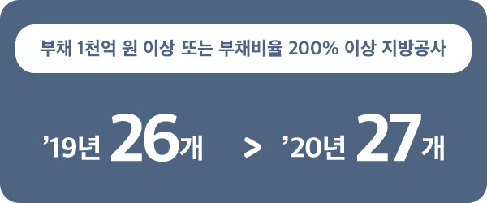

대구시민의
행복을 여는 도시 철도는
오늘도 달린다
쾌적한 도시철도 환경 조성과
최고의 서비스를 제공하는 대구도시철도공사
대구도시철도공사(이하 공사)는 지난 1997년 1호선 개통을 시작으로 2005년 2호선, 2015년 3호선을 개통하며 하루 50여 만 명이 이용하는 명실상부한 대구시민의 발로 자리매김했다. 공사의 전 직원들은 안전한 도시철도와 쾌적한 환경을 제공하기 위해 보이지 않는 곳에서도 24시간 최선을 다하고 있다. 오늘도 대구도시철도를 이용하는 시민들의 안전 수송과 무사고를 기원하며 일터로 향한다.
글 편집실 사진 대구도시철도공사 홍보법무실
01
시민들의 발이 되어 하루의 시작과 끝을 함께 하며 달리는 대구의 도시철도. 여명이 채 가시지 않은 새벽 5시, 문양 차량기지에서 출고 점검을 끝낸 전동차가 출발을 기다리고 있습니다. 그리고 하루 운행을 마친 전동차는 다시 입고되어 차륜의 마모나 변형 여부를 확인하며 내일을 준비합니다.
02
문양차량기지사업소 검수부에서 전동차에 사용되는 압축공기의 습기를 제거하는 공기건조기를 교체하고 있습니다. 또 월배차량기지사업소 검수부에서는 김생호 주임님이 전동차 하부 차륜 상태와 제동장치 등 각종 장치의 이상유무를 정밀하게 점검하고 있습니다. 안전운행에 영향을 미치면 안 되기 때문입니다.
03

시민들이 매일 이용하는 지하공간인 만큼 깨끗한 환경을 유지하는 것이 중요하겠죠. 쾌적한 지하환경을 조성하기 위해 고압세척기로 지하 터널의 도상과 벽체에 흡착된 먼지 등을 제거하고 있습니다.
04
다시 추운 겨울이 찾아왔습니다. 동절기(폭설)에 대비하기 위해 전동차의 선두차에 제설 브러쉬를 장착하고 마모 상태를 점검하고 있습니다. 갑자기 폭설이 내렸을 때 전동차의 궤도빔 상면에 쌓인 눈을 제거해야 열차를 안전하게 운행할 수 있습니다.
05
하루의 운행이 끝나고 열차가 다니지 않는 야간(00:30~04:20)에 선로를 순회하면서 도상, 침목, 레일 상태 등을 점검합니다. 열차의 방향을 바꾸어 주는 분기기의 체결 장치를 점검하고, 이완된 볼트도 조여줍니다. 다음 날 아침에도 첫 열차는 안전하게 출발할 것입니다.
06
열차를 다른 선로로 이동시키기 위한 중요한 장치인 ‘분기기’를 검사하고 있습니다. 또 10,000시간이 넘게 가동 중인 레일연마차도 점검을 꼼꼼히 해 장비의 컨디션을 잘 유지하고 있습니다.